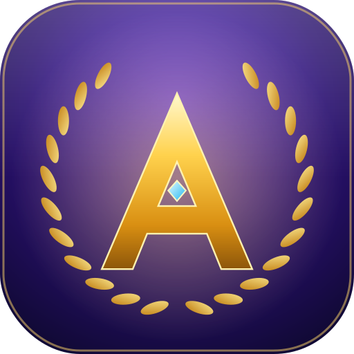

Atenas SMP
Supervivencia con propósito
Consultando servidor…
Cómo entrar desde PC
- Descarga e instala el launcher (Windows).
- Elige tu nombre o inicia con Microsoft.
- Pulsa Instalar y jugar: entra directo al servidor.
¿Y desde el celular?
El servidor usa mods de Java Edition, así que Minecraft normal de celular (Bedrock) no puede entrar. En Android se puede con PojavLauncher, pero es manual y exige un teléfono potente. Aquí tienes la IP y el estado para unirte desde PC.